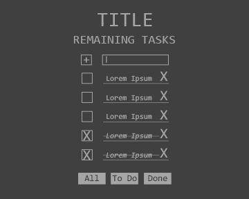

To Do Application Details & Style Guide
Description of Application
Build a simple web app to manage a ToDo list. It should allow the creation of new tasks, the viewing of tasks, a process to mark tasks as complete, ability to remove tasks, and the ability to filter by complete/not complete.
Wireframes
My To Do List
- ☑ Body markup/style
- ☑ Header markup/style
- ☑ Add markup/style
- ☑ Form markup/style
- ☑ Buttons markup/style
- ☑ Parse & get info from local storage
- ☑ Stringify & set info to local storage
-
☑ Create New Item function
- ☑ Check to see if input is empty
- ☑ Create new object
- ☑ Display new object
- ☑ Add object to collection
- ☑ Run display function (updates localStorage)
- ☑ Run remaining items function
-
☑ Display function
- ☑ Run for each item in the itemList
- ☑ Add new div to contain pieces
- ☑ Add new skull button based on completed status
- ☑ Add new event listener based on completed status
- ☑ Add new line with text
- ☑ Add new delete button
- ☑ Prepend div to top of item-container
- ☑ Append completed items div to bottom of item-container
- ☑ Stringify & save to local storage
-
☑ Add new item function
- ☑ Add new ListItem
- ☑ Get text from input
- ☑ Set name (timestamp- Do not reduce to seconds. It can resulte in multiple items with same name)
- ☑ Set complete = false
- ☑ Clear input text
- ☑ Run display function (updates localStorage)
- ☑ Run remaining items function
- ☑Done style
-
☑ Done function
- ☑ Add done style
- ☑ Use id to change complete to true
- ☑ Trigger display function (updates localStorage)
- ☑ Run remaining items function
-
☑ Delete function
- ☑ Use name from button and object
- ☑ Remove object from collection
- ☑ Trigger display function (updates localStorage)
- ☑ Run remaining items function
-
☑ Remaining items function
- ☑ Obtain items complete == false
- ☑ Output the qty into header
-
Filter buttons
- ☑ Filter to do
- ☑ Filter Done
- ☑ Filter All (remove filters?)
- ☑ Run Display on load (retrieves from Local Storage)
-
☑ Create undone function
- ☑ Remove done style
- ☑ Use id to change complete to false
- ☑ Trigger display function (updates localStorage)
- ☑ Run remaining items function
- ☑ Set localStorage helper to module, pass it this
- ☑ Set utilities to module
- ☑ Return focus to add-item input after any action
- ☑ Trigger an add-item function when you hit enter